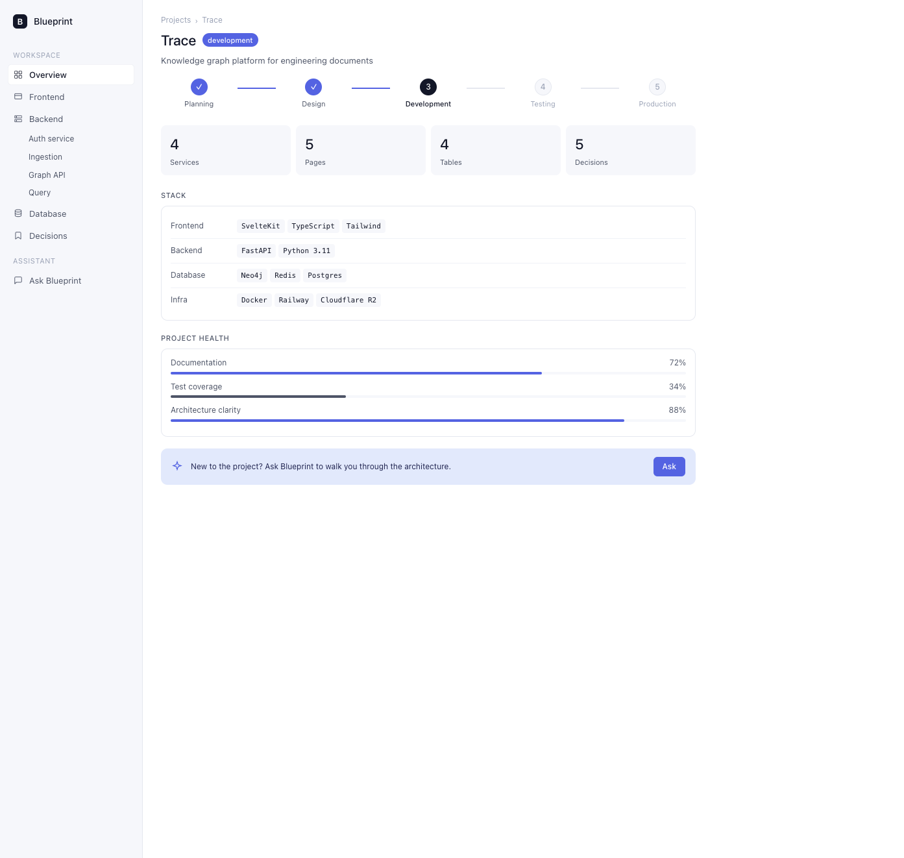
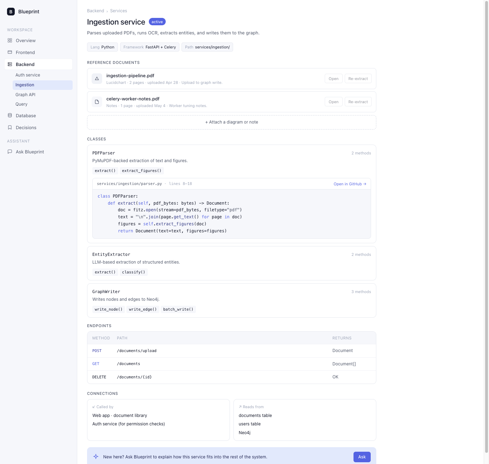
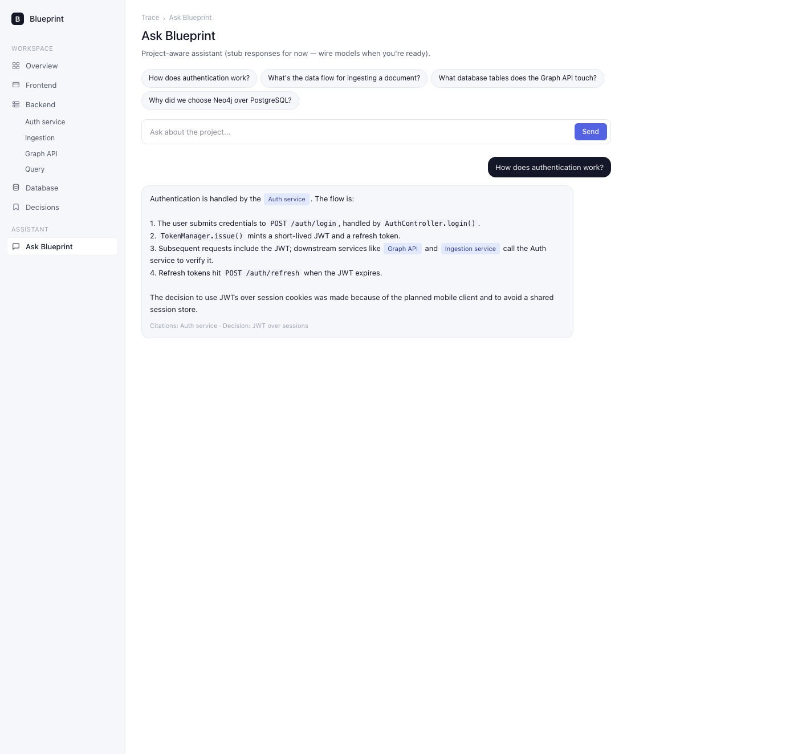

Projects
Descriptions for each project are listed below. GitHub and other profile links are on the Contact page.
Blueprint
Structured documentation app for a full-stack product: stack and phase overview, frontend pages and components, backend services with endpoints and inline code, database tables, an architecture decision log, PDF reference uploads, and an “Ask Blueprint” assistant (stub answers today, ready for real retrieval + models later).
SvelteKit · TypeScript · Tailwind · FastAPI · SQLite


Internal ops dashboard
Single place for weekly metrics and exceptions instead of bouncing between spreadsheets.
React · Postgres · PythonEDI / carrier integration helper
Validation and logging around file drops so support can see what failed and why.
Python · SQL · AWSPersonal website
This site — static HTML/CSS and a small script for filters.
HTML · CSSCapstone Project: TRACE Tool
Penetration tester dashboard developed as a team capstone for the DevCom program. The application presents scan results, findings, and reporting in one interface to support security review workflows.
TypeScript · API · Database